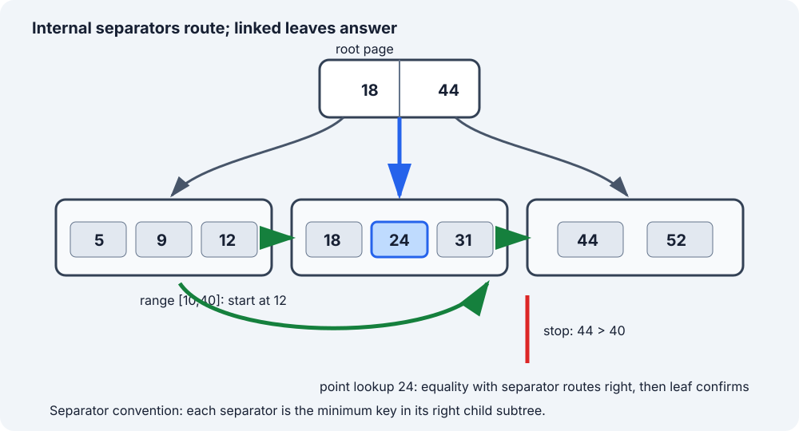

Sections
- B+ Tree Database Index: Route Once, Scan Leaves
- 1. Simple definition and learning contract
- 2. B-tree family intuition: optimize page visits
- 3. Structure and invariants
- 4. Point lookup trace
- 5. Range scan trace
- 6. Dynamic insertion and deletion mechanics
- 7. Java 17 read model
- 8. Why the read algorithms are correct
- 9. Cost derivation, including output
- 10. Database reality and trade-offs
- 11. Common errors, boundaries and interview variations
- 12. Verification, sources and continuation
B+ Tree Database Index: Route Once, Scan Leaves
Local study intake · Java read model · Validation harness
This module enriches section 6 of the uploaded Advanced_Trees_FAANG_Mermaid_Study_Guide.md. The source contributes the B+ tree distinction, linked-leaf idea and split outline. The page-oriented model, exact separator invariant, four examples, lookup/range traces, deletion cautions, Java 17 bulk-loaded read model, correctness argument, cost derivation, database boundaries and original diagram are added teaching material. The canonical system-design guide already compares B-tree and LSM families; this focused module adds data-structure mechanics instead of duplicating that overview.
1. Simple definition and learning contract
A B+ tree is a height-balanced multiway search tree designed to keep many keys in each node. Internal nodes route by separator keys; leaf nodes hold the searchable entries in key order. A leaf-level sibling chain lets a range query descend once and then continue sequentially.
This module uses one precise separator convention:
separator[i]is the smallest key inchildren[i + 1]'s subtree.
Therefore a search key equal to a separator goes right. Real engines can encode boundaries differently; never mix a diagram's convention with different comparison code.
The runnable Java model is intentionally narrower than a database engine:
- input is already sorted and keys are distinct;
bulkLoadcreates an immutable in-memory index;getperforms point lookup;range(from, to, limit)returns inclusive, ascending results;- leaves are linked for continuation;
- there is no insert/delete API, page cache, WAL, MVCC, latch, checksum, overflow page, compression or crash recovery.
That boundary is important: the program validates routing and range-scan invariants without pretending to implement a storage engine.
Four concrete examples
| Data / request | Expected result | Concept tested |
|---|---|---|
keys 5,9,12,18,24,31,44,52; get(24) |
value for key 24 | equality with a leaf entry |
same tree; get(25) |
empty | landing in the correct leaf does not imply a match |
same tree; range(10,40,99) |
keys 12,18,24,31 |
one descent, then linked-leaf continuation |
same tree; range(18,24,2) |
keys 18,24 |
inclusive bounds and output limit |
The implementation also accepts an empty input, supports Integer.MIN_VALUE/MAX_VALUE, rejects duplicate or unsorted keys, rejects negative limits, and rejects reversed range bounds.
2. B-tree family intuition: optimize page visits
A binary search tree spends one pointer per branch and may hold one key per node. A disk-oriented tree instead tries to match a node to a storage page. If one page can hold hundreds of separators and child page identifiers, fan-out is high and height stays small.
For example, a purely illustrative fan-out of 256 can address roughly:
| Levels containing children | Approximate leaf-page reach |
|---|---|
| 1 | 256 |
| 2 | 65,536 |
| 3 | 16,777,216 |
Those are not capacity promises: page size, key width, tuple metadata, fill factor, compression and engine format change fan-out. The lesson is that a shallow page tree can replace many random pointer hops.
B-tree versus B+ tree vocabulary
| Property | Classical B-tree description | B+ tree description used here |
|---|---|---|
| Internal node contents | keys may be searchable records | separators primarily route |
| Search success | may occur before a leaf | confirmed in a leaf |
| Leaf contents | records not necessarily confined there | all searchable key/value entries |
| Ordered range | possible by ordered traversal | natural after reaching first leaf |
| Internal fan-out | high | often higher when internal payload is smaller |
Database product documentation often says B-tree for a page structure with B+ tree-like characteristics. PostgreSQL documents leaf tuples that point to table rows and internal tuples that point down a level; SQLite distinguishes table and index b-tree page formats. Prefer the engine's documented terms over arguing from the textbook label.
3. Structure and invariants

The example has root separators [18 | 44] and leaves:
L0 = [5,9,12]L1 = [18,24,31]L2 = [44,52]
Its invariants are:
- Sorted pages: keys inside every node are strictly increasing in this model.
- Separator ranges: child 0 contains keys
< separator[0]; a middle childicontains keys>= separator[i-1]and< separator[i]; the last child contains keys>=the final separator. - Leaf-only entries: a point result is accepted only after searching a leaf.
- Uniform depth: every leaf is at the same depth.
- Ordered leaf chain: following
nextvisits all later leaves in nondecreasing key order without returning to internal nodes. - Occupancy: non-root nodes normally obey engine-specific minimum and maximum fill rules. The bulk loader balances groups, but this teaching model does not expose dynamic underflow/overflow repair.
The routing loop uses an upper bound over separators:
int child = 0;
while (child < separators.length && key >= separators[child]) {
child++;
}
Production code normally binary-searches a wide node, as the Java source does. The >= is the key line: with lower-bound-of-right-child separators, equality belongs to the right child.
4. Point lookup trace
Find key 24 in the pictured tree.
| Page step | Keys inspected | Decision | Reason |
|---|---|---|---|
| 1 | root [18,44] |
choose child 1 | 24 >= 18 but 24 < 44 |
| 2 | leaf [18,24,31] |
binary-search index 1 | key equals 24 |
| result | entry (24,value) |
found | only a leaf confirms membership |
Find missing key 25:
| Page step | Decision |
|---|---|
| 1 | the same root comparisons choose child 1 |
| 2 | leaf binary search places 25 between 24 and 31 |
| result | not found; do not scan the next leaf for an exact unique-key lookup |
For duplicate-key database indexes, one logical key may map to several row identifiers or span representation-specific entries. This Java contract avoids that separate problem by requiring distinct keys.
5. Range scan trace
Run range(10, 40, 99).
| Step | Current page / position | Output | Next action |
|---|---|---|---|
| 1 | root [18,44] routes 10 to L0 |
[] |
descend once |
| 2 | lower-bound search in [5,9,12] gives index 2 |
[12] |
leaf exhausted; follow next |
| 3 | scan [18,24,31] |
[12,18,24,31] |
leaf exhausted; follow next |
| 4 | first key in [44,52] is 44 |
unchanged | 44 > 40; stop immediately |
The scan does not descend from the root for every returned key. That is the central B+ tree range advantage: routing cost is paid for the start, then leaf adjacency carries the scan.
Limits are operationally useful. range(10,40,2) stops after [12,18]; it need not materialize the full matching range merely to discard later items.
6. Dynamic insertion and deletion mechanics
The runnable model is immutable, but interviews often ask for the write path.
Leaf split example
Assume a leaf holds at most three keys. Insert 28 into [18,24,31]:
| Phase | State | Parent action |
|---|---|---|
| insert in order | [18,24,28,31] |
leaf overflows |
| split | left [18,24], right [28,31] |
wire left.next = right; preserve old successor after right |
| publish separator | right's first key is 28 | copy 28 into parent with a downlink to right |
If the parent overflows, split it and propagate a routing entry upward. A root split creates a new root and is the only ordinary insertion event that increases height.
Deletion is not merely “remove a key”
After deleting from a leaf:
- if occupancy is still legal, stop—but update an ancestor separator if the leaf's first key changed and that key defines a boundary;
- otherwise redistribute with a sibling when allowed, then refresh separators;
- otherwise merge siblings, repair the leaf chain, and remove the redundant parent entry;
- propagate parent underflow upward; if a root has only one child, replace the root and reduce height.
A frequent error is to borrow or merge leaf entries but leave the parent boundary stale. Another is to repair parent pointers while forgetting the leaf next link. A production engine additionally coordinates concurrent readers, logged page changes, split visibility and recovery; these details are outside an interview-level container implementation.
7. Java 17 read model
The complete source is BPlusTreeReadModel.java. It creates balanced leaf groups from sorted input, links them, and repeatedly groups children into internal nodes. Each separator is derived—not guessed—from the first key of its right child.
private Leaf descend(int key) {
Node node = root;
while (node instanceof Internal internal) {
int child = upperBound(internal.separators, key);
node = internal.children[child];
}
return (Leaf) node;
}
Range lookup descends to fromInclusive, uses a leaf lower bound, and then advances through leaf.next:
Leaf leaf = descend(fromInclusive);
int index = lowerBound(leaf.keys, fromInclusive);
while (leaf != null && result.size() < limit) {
while (index < leaf.keys.length && result.size() < limit) {
int key = leaf.keys[index];
if (key > toInclusive) return result;
result.add(new Entry(key, leaf.values[index++]));
}
leaf = leaf.next;
index = 0;
}
limit caps the number of constructed Entry results. It does not promise a database execution plan, isolation level, stable snapshot, or server-side cursor.
8. Why the read algorithms are correct
Descent. In an internal node, upperBound(separators,key) returns the number of separators less than or equal to key. By the separator-range invariant, exactly that child contains every possible occurrence of key. Repeating this choice moves one level downward while preserving the claim that the selected subtree is the only candidate. Uniform leaf depth guarantees termination at a leaf; binary search then finds the key if and only if it exists.
Range start. The same descent selects the only leaf that could contain fromInclusive. A lower-bound search chooses the first leaf key not less than the lower bound, so no qualifying key inside that leaf is skipped.
Range continuation. Keys remaining in the current leaf are ordered. The leaf-chain invariant says every key in the next leaf is at least every key in the current leaf, and repeated next visits all later leaves. Appending until a key exceeds toInclusive therefore returns every in-range entry, in order, exactly once. Stopping at limit returns the correct prefix of that ordered answer.
Bulk loading. Input keys are strictly increasing. Contiguous slices are therefore internally sorted and every leaf's keys are below the next leaf's keys. Separators copied from right-child minima establish the routing ranges. Grouping every node at one level before building the next keeps all leaves at uniform depth. Induction over constructed levels proves all read invariants.
9. Cost derivation, including output
Let n be entries, F average internal fan-out, B average leaf entries, h tree height, and k returned entries.
| Operation | Page-oriented intuition | Java model CPU cost | Result space |
|---|---|---|---|
| point lookup | O(h) page visits | O(h log F + log B), bounded by O(log n) | O(1) |
| range lookup | O(h + leaves visited) page visits | O(log n + k) plus boundary checks | O(k) |
| bulk load | sequential construction | O(n) | O(n) index storage |
With useful occupancy, h is logarithmic in fan-out: approximately O(log_F(n/B)) internal levels plus the leaf. Exact height depends on root and occupancy rules.
Returning k Java records necessarily costs O(k) time and O(k) output space; no algorithm can materialize k distinct results in less. If values themselves are copied rather than referenced, add the total copied payload length. A streaming cursor can reduce client-side auxiliary memory to O(1) beyond buffers, but total output work remains proportional to what is consumed.
The Java model stores every key/value reference plus node arrays: O(n) total. Its iterative lookup uses O(1) auxiliary stack space.
10. Database reality and trade-offs
Clustered and secondary indexes are product-specific
In InnoDB, the clustered index stores row data and secondary entries include the row's primary-key columns. A wide primary key therefore enlarges secondary indexes. PostgreSQL's documented B-tree leaf tuples point to table rows in a heap-organized relation. These are different physical contracts even though both expose ordered indexes.
B+ tree strengths
- equality, inequality and bounded range predicates;
- ordered iteration and
ORDER BYplans when index order aligns; - predecessor/successor and prefix ranges under a compatible collation/operator class;
- shallow trees through high page fan-out.
Costs and alternatives
- random insertions can split pages and amplify writes;
- every additional index consumes storage and write work;
- wide keys reduce fan-out;
- an unanchored substring search such as
LIKE '%term%'is not rescued by ordinary key ordering; - hash indexes target equality, LSM families buffer writes and pay compaction/read trade-offs, and inverted/spatial/vector indexes serve different predicates.
An index being available does not force the optimizer to use it. Selectivity, covering ability, table size, statistics, ordering and base-row fetch cost can make a scan or another index cheaper.
11. Common errors, boundaries and interview variations
- Route separator equality left while separators mean “minimum of right child.” Use
>=/upper bound for this convention. - Return an internal separator as the record. In this model, only leaves contain searchable entries.
- Re-descend for every range key. Descend once, then use the leaf chain.
- Call the structure “sorted” without naming the comparison/collation. Index order is defined by an operator class or comparator.
- Claim all database B-trees have an identical leaf-link or payload layout. Cite the target engine.
- Ignore duplicate keys, null ordering, composite encodings or row identifiers. They materially change the entry contract.
- Treat every page split as a height increase. Height rises only when the root splits.
- Describe deletion without separator refresh, leaf-link repair, or root contraction.
- Equate O(log n) CPU with a fixed number of disk reads. Cache residency and page layout dominate real latency.
- Present the Java model as durable or concurrent. It is an immutable algorithm model only.
Useful interview follow-ups:
- Composite index
(tenant_id, created_at): explain why tenant equality plus a time range forms one contiguous key interval, while filtering only oncreated_atmay not. - Covering index: add projected columns to leaf entries to avoid a base-row fetch, then discuss larger leaves and lower fan-out.
- Bulk load versus online insert: sorted bulk load can build compact leaves sequentially; online writes need split and concurrency protocols.
- B+ tree versus LSM: compare random page maintenance with buffered sequential writes, compaction, read amplification and range behavior.
- Concurrent split: describe why readers must see either a safe old path or the new right sibling; actual latching and WAL algorithms are engine-specific.
12. Verification, sources and continuation
The Java 17 compiler module compiled the read model and independent harness. The harness passed deterministic lookup/range/boundary cases, rejected malformed contracts, and compared 100,000 seeded random point lookups plus 50,000 seeded random bounded range queries against TreeMap.
Sources checked 2026-10-08:
- Uploaded
Advanced_Trees_FAANG_Mermaid_Study_Guide.md, section 6, lines 782–833 (SHA-25686cb65f3d6d0f327e5d22c03b5d587144eb11cc9ff27a5b523b298b09ad7f5b1): conceptual spine and split outline. - PostgreSQL 18 — B-Tree Indexes: multi-level page structure, leaf/internal tuple roles and cascading page splits.
- SQLite — Database File Format: B-tree Pages: balanced depth, page types, ordered cells and interior child routing.
- MySQL 8.4 — InnoDB Clustered and Secondary Indexes: row storage in the clustered index and primary-key columns in secondary entries.
- Canonical system-design fundamentals: retained high-level index/storage comparison.
Next bounded source section: section 5, B-Tree. Compare it with this module before deciding whether it adds a distinct teaching unit; do not publish a terminology-only duplicate.